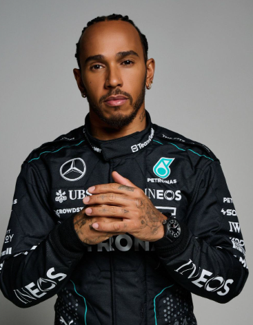
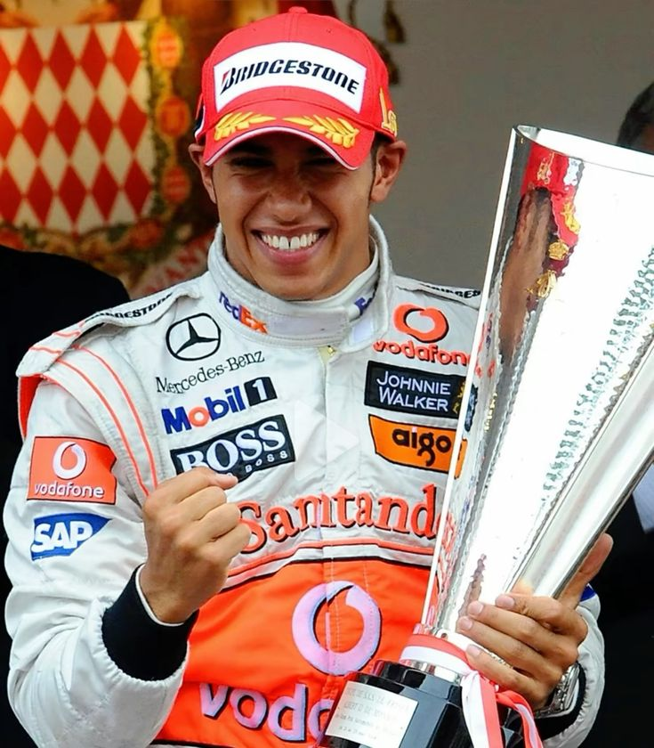

Lewis Hamilton
DRIVER PRESENTATION

Lewis Hamilton
Perspectiva Histórica y Análisis del Rendimiento Deportivo de Sir Lewis Hamilton
Sir Lewis Hamilton inició su trayectoria en el karting (1995), integrándose prematuramente a los programas de McLaren y Mercedes-Benz. Su debut en Fórmula 1 (2007) fue disruptivo, alcanzando el subcampeonato y, posteriormente, su primer título mundial en 2008 como el campeón más joven hasta esa fecha. En 2013, su traslado a Mercedes-AMG inició una era de dominio técnico sin precedentes bajo la normativa híbrida, donde su precisión en clasificación y gestión de componentes le permitieron obtener seis títulos adicionales (2014-2020), igualando el récord histórico de siete campeonatos. El ciclo 2021 destacó por su resiliencia en un duelo intensivo frente a Max Verstappen, periodo en el que Hamilton superó el umbral de las 100 victorias y 100 pole positions. Con 182 podios y el título de Knight Bachelor concedido por la Corona Británica, Hamilton consolidó su legado como el máximo referente estadístico y técnico del automovilismo contemporáneo.
MOMENTOS DESTACADOS

Primer Título Mundial
Interlagos 2008: Una de las finales más dramáticas de la historia, decidida en la última curva.

Era de Dominio Mercedes
2014: El inicio de una unión histórica que resultaría en 6 títulos mundiales adicionales.

Hito de las 100 Victorias
Rusia 2021: Hamilton se convierte en el primer piloto en alcanzar las 100 victorias en F1.